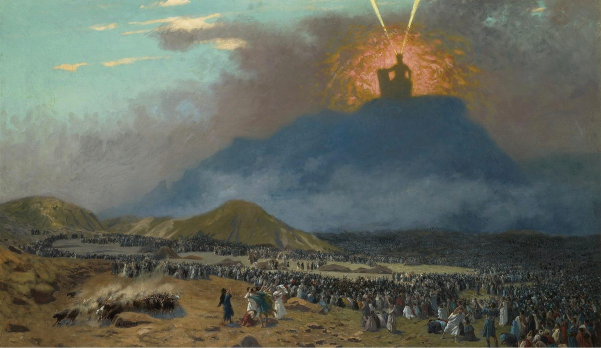

Hebrews 12 — The Mister Translation

⚠ Gérôme paints the mountain the way verse 18 lists it: fire, thick darkness and gloom, with the people kept back on the plain below, where ‘if even a beast touches the mountain, it shall be stoned’ (verse 20; Exodus 19:13).

Translator’s Notes
“Since we have so great a cloud of witnesses surrounding us, let us put off every weight and the sin that clings so closely, and let us run with endurance the race set before us.” Nephos, “cloud,” stands in one verse of the New Testament. The “witnesses” are the people of chapter 11, each of them “attested” with the verb of the same root (Hebrews 11:2, 11:4, 11:39); whether they surround the runners as spectators or as people who bore witness, the Greek does not say, and readings differ. Onkos, “weight,” a bulk or a burden, stands in one verse. Euperistatos, “that clings so closely,” stands in one verse, and its meaning is uncertain: its parts say something like “standing well around,” and the shelf guesses in different directions (dictionary). “Endurance” is the hypomonē of Hebrews 10:36 (dictionary). “Race” is agōn, a contest, the word of “I have fought the good fight” at 2 Timothy 4:7. The KJV reads “the sin which doth so easily beset us”; the NWT 1984 reads “the sin that easily entangles us”; the TLB reads “watching us from the grandstands.”
“Looking to the Author and Completer of faith, Jesus, who for the joy set before him endured the cross, despising shame, and has sat down at the right hand of the throne of God.” Archēgos, “Author,” stands in four verses, printed “Author” in all of them: Acts 3:15, Acts 5:31, Hebrews 2:10 and here (dictionary). Teleiōtēs, “Completer,” stands in one verse; it is the noun of the verb this translation prints “make complete” at Hebrews 2:10, 10:14 and 11:40 (dictionary). The Greek has “the faith,” with no “our.” “For the joy” is anti, which can mean “for the sake of” the joy ahead or “instead of” a joy he gave up; readings differ. “Has sat down at the right hand” is said of him at Hebrews 1:3, 8:1 and 10:12, here in the perfect tense. The KJV reads “the author and finisher of our faith”; the NIV reads “the pioneer and perfecter of faith”; the NWT 1984 reads “he endured a torture stake,” its rendering of stauros throughout, a doctrinal choice about the shape of the instrument.
“Consider him who has endured such opposition from sinners against themselves, so that you do not grow weary and give out in your souls.” Analogizomai, “consider,” stands in one verse; it is not the “consider” of Hebrews 3:1. Antilogia, “opposition,” a speaking against, stands in four verses: the “dispute” of Hebrews 6:16 and 7:7, this verse, and the “rebellion of Korah” at Jude 11 (dictionary). “Against themselves” is the plural printed by Westcott–Hort; Nestle–Aland 28 and Tregelles read “against himself,” and Robinson–Pierpont “against him” (the apparatus). On the plural, the sinners harm themselves by opposing him; on the singular, the opposition is aimed at Jesus. “Give out” is the verb of verse 5. The KJV reads “contradiction of sinners against himself”; the NWT 1984 reads “contrary talk by sinners against their own interests,” following the plural; the NIV reads “such opposition from sinners.”
“In your struggle against sin you have not yet resisted to the point of blood.” Antagōnizomai, “struggle,” stands in one verse, and keeps the contest of verse 1. Antikathistēmi, “resist,” stands in one verse. “To the point of blood” has been read as death, like the deaths of Hebrews 11:37, or as the blood of the contest itself; the Greek says only “as far as blood.” The KJV reads “Ye have not yet resisted unto blood, striving against sin”; the NIV reads “to the point of shedding your blood”; the TLB reads “until you sweat great drops of blood.”
⚠ “My son, do not think lightly of the discipline of Jehovah, nor give out when you are reproved by him; for whom Jehovah loves he disciplines, and he scourges every son whom he receives.” The quotation is Proverbs 3:11–12. The Hebrew reads “My son, do not reject the discipline of Jehovah, and do not loathe his reproof; for whom Jehovah loves he reproves, and as a father the son in whom he delights” (checked). The Greek of Proverbs in Brenton’s edition reads “Son,” without “my,” and “reproves” where Hebrews has “disciplines”; it has “and he scourges every son whom he receives” where the Hebrew has “as a father the son” (checked). How the Greek came to read “scourges” is explained from the Hebrew letters (reported, not checked here). Proverbs has the divine name, and the Greek reads kyrios, so this page prints “Jehovah,” as the NWT 1984 does: “for whom Jehovah loves he disciplines.” “Addresses” is dialegomai, the verb of Paul reasoning in the synagogue at Acts 17:2. Oligōreō, “think lightly,” stands in one verse. The verb mastigoō, “scourge,” stands in seven verses; the other six are the flogging of Jesus or of his followers, as at John 19:1 (dictionary). Paradechomai, “receive,” stands in four verses, among them the word that the good soil “accepts” at Mark 4:20. The ASV reads “regard not lightly the chastening of the Lord”; the KJV reads “and scourgeth every son whom he receiveth”; the NIV reads “and he chastens everyone he accepts as his son.”
“It is for discipline that you endure … But if you are without discipline, in which all have become companions, then you are illegitimate and not sons.” Paideia, “discipline,” the training of a child, stands in six verses, four of them in this chapter (dictionary). Eis paideian hypomenete can be a statement, “It is for discipline that you endure,” or a command, “Endure for discipline”; the shelf divides, and this page does not choose. Robinson–Pierpont reads ei, “if,” for eis (checked against its text). “Companions” is metochoi, the word of Hebrews 1:9, 3:1 and 3:14 (dictionary). Nothos, “illegitimate,” stands in one verse: a child with no standing as an heir (dictionary). The KJV reads “If ye endure chastening” and “then are ye bastards, and not sons”; the NWT 1984 reads “It is for discipline YOU are enduring”; the NIV reads “Endure hardship as discipline.”
“We had the fathers of our flesh to discipline us … Shall we not much more be subject to the Father of spirits, and live? … so that we may take a share in his holiness.” Paideutēs, one who disciplines, stands in two verses; the other is “a corrector of the foolish” at Romans 2:20. “The Father of spirits” is set against “the fathers of our flesh”; God is “the God of the spirits of all flesh” at Numbers 16:22 and Numbers 27:16. “Take a share” is metalambanō, the land that “receives a share of blessing” at Hebrews 6:7. Hagiotēs, “holiness,” stands in two verses, here and 2 Corinthians 1:12. Eirēnikos, “peaceful,” stands in two verses, here and James 3:17. “Trained” is the athlete’s verb of Hebrews 5:14 (dictionary). The NWT 1984 reads “the Father of our spiritual life”; the ASV reads “yet afterward it yieldeth peaceable fruit unto them that have been exercised thereby”; the NIV reads “a harvest of righteousness and peace.”
“So straighten up the hands that hang down and the paralyzed knees, and make straight tracks for your feet, so that what is lame may not be turned aside but rather be healed.” The first line is close to the Greek of Isaiah 35:3, “Be strong, slackened hands and paralyzed knees” (checked); the Hebrew has “Strengthen weak hands, and make firm stumbling knees” (checked). Anorthoō, “straighten up,” stands in three verses: the bent woman who “straightened up” at Luke 13:13, the tent of David “set up again” at Acts 15:16, and here (dictionary). “Paralyzed” is paralelymena, a participle that stands in five verses; the other four are people healed of paralysis, as at Luke 5:18 and Acts 9:33. The second line is the Greek of Proverbs 4:26, “Make straight tracks for your feet” (checked), where the Hebrew has “Level the path of your foot” (checked). Trochia, “track,” a wheel-rut, stands in one verse (dictionary). The verb ektrepō, “turn aside,” stands in five verses, the other four in the letters to Timothy, as at 2 Timothy 4:4, “wander off to myths”; it can also be a medical word for a joint put out of place. The KJV reads “lest that which is lame be turned out of the way”; the NWT 1984 reads “that what is lame may not be put out of joint”; the NIV reads “so that the lame may not be disabled.”
⚠ “Pursue peace with everyone, and the sanctification without which no one will see the Lord, watching … that no root of bitterness springs up and causes trouble, and through it many are defiled.” “The Lord” stays “Lord” because the Greek does not say whether God or Jesus is meant. Hagiasmos, “sanctification,” stands in ten verses, as at Romans 6:19 (dictionary); it is a different word from the “holiness” of verse 10. “Falls short” is the verb of Hebrews 4:1. The root is from Deuteronomy 29:17 in the Hebrew numbering, 29:18 in English Bibles: the Hebrew has “a root bearing gall and wormwood” (Deuteronomy 29:17), and Brenton’s Greek has “a root springing up in gall and bitterness,” en cholē (checked). Hebrews has “springing up causes trouble,” enochlē: the same six Greek letters as “in gall,” with two of them in the other order (checked). That some copies of Greek Deuteronomy already read “causes trouble” is reported, not checked here. Pikria, “bitterness,” stands in four verses, among them “the gall of bitterness” at Acts 8:23 (dictionary). Enochleō, “cause trouble,” stands in two verses; the other is “those troubled by unclean spirits” at Luke 6:18. Westcott–Hort and Tregelles read “the many” (the apparatus). The KJV reads “lest any root of bitterness springing up trouble you”; the ASV reads “and thereby the many be defiled”; the NWT 1984 reads “that no poisonous root may spring up.”
⚠ “That no one is sexually immoral, or profane like Esau, who for a single meal sold his own birthright. For you know that afterward, when he wanted to inherit the blessing, he was rejected; for he found no place for repentance, though he sought it with tears.” Genesis does not call Esau sexually immoral; the line can be read as two kinds of person, only the second like Esau, or as both said of him, and later Jewish writers did describe Esau that way (reported, not checked here). This page does not choose. “Profane” is bebēlos, the word of the “profane myths” at 1 Timothy 4:7: not foul language but treating what is sacred as common (dictionary). Genesis says “So Esau despised his birthright” (Genesis 25:34), and the Greek of Genesis has “made light of” (checked). Prōtotokia, “birthright,” the rights of the firstborn, stands in one verse; it is the word of the Greek Genesis in that scene (checked) (dictionary). The verb apodokimazō, “reject,” stands in nine verses; the others are the stone the builders rejected and the Son of Man, who must “be rejected,” as at Mark 8:31 (dictionary). “No place for repentance” is read two ways: Esau could not undo what he had done, or he could not change his father’s mind. “It” is feminine in the Greek, and both “the blessing” and “repentance” are feminine nouns, so it can be either. The tears are those of Genesis 27:34 and 27:38, “a great and exceedingly bitter cry.” The KJV reads “for he found no place of repentance, though he sought it carefully with tears”; the ASV reads “he found no place for a change of mind in his father”; the NIV reads “Even though he sought the blessing with tears.”
“For you have not drawn near to what can be touched and set ablaze with fire, and to thick darkness and gloom and storm.” “Drawn near” is the verb of Hebrews 4:16 and 10:22, and of verse 22. “What can be touched” is psēlaphao, the verb of “Touch me and see” at Luke 24:39 (dictionary). The critical text has no “mountain” here; Robinson–Pierpont adds it (the apparatus). The Greek can also be read “to what can be touched, and to a burning fire.” The list echoes the Greek of Deuteronomy 4:11, “the mountain was burning with fire up to heaven: darkness, thick darkness, storm” (checked); where Deuteronomy begins with skotos, “darkness,” Robinson–Pierpont has skotos here too (the apparatus). Gnophos, “thick darkness,” stands in one verse (dictionary). Thyella, “storm,” stands in one verse. Zophos, “gloom,” stands in five verses, the other four in 2 Peter and Jude, as at Jude 6. The KJV reads “For ye are not come unto the mount that might be touched”; the NWT 1984 reads “that which can be felt and which has been set aflame with fire”; the Douay reads “and a burning fire, and a whirlwind, and darkness, and storm.”
“And to the blast of a trumpet and a voice of words, which those who heard begged that no further word be added to them, for they could not bear what was commanded: ‘If even a beast touches the mountain, it shall be stoned.’” Ēchos, “blast,” a sound or a roar, stands in five verses, among them the “sound like a violent wind” at Pentecost (Acts 2:2). The trumpet is the “very loud trumpet blast” of Exodus 19:16. “Begged” is paraiteomai, the verb of “refuse” in verse 25. “That no further word be added” answers Deuteronomy 5:18, 5:22 in English Bibles, where after the ten words Jehovah “added nothing more”; the Greek of that verse has the same “darkness, thick darkness, storm” (checked). Westcott–Hort omit the “no” (the apparatus). The command is a short form of Exodus 19:12 and 19:13, “whether beast or man, he shall not live.” The KJV and Geneva add “or thrust through with a dart,” from Exodus 19:13; the words are in neither the critical text nor Robinson–Pierpont (checked), and they are reported to come from the Textus Receptus behind those two versions (reported, not checked here). The ASV reads “If even a beast touch the mountain, it shall be stoned”; the NWT 1984 reads “the people implored that no word should be added to them.”
“And so fearful was the sight that Moses said, ‘I am terrified and trembling.’” Phantazō, “appear,” behind “the sight,” stands in one verse. “I am terrified” is ekphobos eimi, the words of Moses in the Greek of Deuteronomy 9:19 (checked), where he speaks of the golden calf and the anger of Jehovah; the Hebrew there has “I was in dread” (Deuteronomy 9:19). Ekphobos, “terrified,” stands in two verses; the other is the disciples on the mountain of the transfiguration at Mark 9:6 (dictionary). Entromos, “trembling,” stands in three verses: Moses at the bush in Acts 7:32, the jailer at Acts 16:29, and Moses here (dictionary). The KJV reads “I exceedingly fear and quake”; the NIV reads “I am trembling with fear”; the Douay reads “I am frighted, and tremble.”
“But you have drawn near to Mount Zion and to the city of the living God, the heavenly Jerusalem, and to myriads of angels in festal gathering.” The city is the one Abraham waited for at Hebrews 11:10, prepared for them at 11:16; Paul calls it “the Jerusalem above” at Galatians 4:26, and John sees “new Jerusalem” at Revelation 21:2. “The living God” is the phrase of Hebrews 3:12, 9:14 and 10:31. The noun myrias, a unit of ten thousand, stands in seven verses, as at Jude 14. Panēgyris, “festal gathering,” a crowd assembled for a festival, stands in one verse (dictionary); it can go with the angels, as here, or with the congregation of verse 23, and readings differ. The KJV reads “and to an innumerable company of angels”; the NIV reads “thousands upon thousands of angels in joyful assembly”; the NWT 1984 reads “and myriads of angels.”
“And to the congregation of the firstborn who are enrolled in the heavens, and to God the Judge of all, and to the spirits of the righteous made complete.” Ekklēsia is “congregation,” as everywhere on these pages, and as at Hebrews 2:12 (dictionary). “Firstborn” is plural; it shares its root with the birthright Esau sold in verse 16. The verb apographō, “enroll,” stands in four verses; the other three are the registration under Augustus at Luke 2:1, 2:3 and 2:5 (dictionary). “God the Judge of all” can also be read “a Judge who is God of all.” “Made complete” answers Hebrews 11:40, “so that they would not be made complete apart from us.” The KJV reads “To the general assembly and church of the firstborn”; the Geneva reads “And to the assembly and congregation of the first born”; the NWT 1984 reads “the spiritual lives of righteous ones,” as it read “the Father of our spiritual life” in verse 9, where the Greek has “spirits” both times.
⚠ “And to Jesus, mediator of a new covenant, and to the blood of sprinkling that speaks better than Abel.” Mesitēs, “mediator,” stands in six verses, three of them in Hebrews: Hebrews 8:6, 9:15 and here (dictionary). “New” is neos here, where Hebrews has kainē for the new covenant at Hebrews 8:8 and 9:15; Hebrews uses neos nowhere else. Rhantismos, “sprinkling,” stands in two verses, here and “sprinkling with the blood of Jesus Christ” at 1 Peter 1:2 (dictionary); its verb is the sprinkling of Hebrews 9:13 and 10:22, and the “sprinkling of the blood” at 11:28 is a different word. The Greek says “better than Abel,” with the masculine article, the man himself: Abel “is still speaking” at Hebrews 11:4, and his blood “is crying out to me from the ground” at Genesis 4:10. Whether the comparison is with Abel or with his blood, the shelf divides. The KJV reads “that speaketh better things than that of Abel”; the Douay reads “And to Jesus the mediator of the new testament”; the TLB reads “instead of crying out for vengeance as the blood of Abel did,” an interpretation the Greek does not state.
“See that you do not refuse the one who is speaking. For if they did not escape when they refused the one who warned them on earth, much less will we, if we turn away from the one who warns from the heavens.” “Refuse” is the verb of “begged” in verse 19: to beg off. “Warned” is chrēmatizō, the verb of Moses “warned” at Hebrews 8:5 and Noah at 11:7 (dictionary). The one who warned on earth can be read as Moses or as God speaking at Sinai; readings differ. “Escape” picks up “how shall we escape” at Hebrews 2:3; Robinson–Pierpont has the simple verb, “fled” (the apparatus). The ASV reads “much more shall not we escape who turn away from him that warneth from heaven”; the NWT 1984 reads “who begged off from him who was giving divine warning upon earth”; the TLB reads “when they refused to listen to Moses, the earthly messenger.”
⚠ “His voice then shook the earth, but now he has promised, saying, ‘Yet once more I will shake not only the earth but also the heaven.’ Now this ‘Yet once more’ makes clear the change of the things that are shaken.” The quotation is Haggai 2:6 (yet to come in this translation; Haggai 1 is). The Hebrew reads “Yet once, it is a little while, and I will shake the heavens and the earth and the sea and the dry land”; the Greek reads “Yet once I will shake the heaven and the earth and the sea and the dry land” (both checked). Hebrews puts the earth first, adds “not only … but also,” and leaves out the sea and the dry land. The Greek has two verbs: “shook” and “shaken” are saleuō, the verb of the place that “was shaken” at Acts 4:31; Haggai’s “I will shake” is seiō, the root of seismos, “earthquake.” Robinson–Pierpont reads “I shake” (the apparatus). The argument rests on “once,” hapax, the word of “once” at Hebrews 9:26 and 9:28. Metathesis, “change,” stands in three verses: “a change of law” at Hebrews 7:12, Enoch’s being taken at Hebrews 11:5, and here (dictionary). Whether the change is removal or transformation, the shelf divides. The KJV reads “signifieth the removing of those things that are shaken”; the Douay reads “he signifieth the translation of the moveable things”; the Geneva reads “as of things which are made with hands.”
“Therefore, since we are receiving a kingdom that cannot be shaken, let us have gratitude, through which we may serve God acceptably, with reverence and awe; for indeed our God is a consuming fire.” Asaleutos, “that cannot be shaken,” stands in two verses; the other is the ship’s bow that “remained immovable” at Acts 27:41 (dictionary). Echōmen charin is “let us have gratitude”: charin echō is “I am grateful” at 1 Timothy 1:12 and 2 Timothy 1:3; the older English shelf reads “let us have grace,” and that reading has its own pedigree. “Serve” is the verb of “to serve the living God” at Hebrews 9:14. Eulabeia, “reverence,” stands in two verses, here and Hebrews 5:7, “he was heard because of his reverence” (dictionary). Deos, “awe,” stands in one verse. Robinson–Pierpont reads “we serve” and “with modesty and reverence” (the apparatus). The last line is the Greek of Deuteronomy 4:24, “Jehovah your God is a consuming fire” (checked), with “our God”; the Hebrew has “a devouring fire, a jealous God” (Deuteronomy 4:24). Katanaliskō, “consume,” stands in one verse (dictionary). The KJV reads “let us have grace, whereby we may serve God acceptably with reverence and godly fear”; the NIV reads “let us be thankful, and so worship God acceptably with reverence and awe”; the NWT 1984 reads “For our God is also a consuming fire.”
Patterns worth carrying forward
Where this translation keeps the exact words: “witnesses,” the root of “attested” in chapter 11; “endurance”; “Author,” as at 2:10, and “Completer,” the noun of “make complete”; “against themselves,” with the other readings in the note; “discipline,” one word all through verses 5–11; “Jehovah” in the quotation from Proverbs; “scourges”; “companions,” as at 1:9 and 3:14; “illegitimate”; “the Father of spirits”; “tracks”; “sanctification,” kept apart from “holiness”; “root of bitterness”; “profane”; “birthright”; “drawn near,” the verb of 4:16 and 10:22; “congregation,” not “church”; “enrolled”; “made complete,” as at 11:40; “blood of sprinkling”; “better than Abel”; “change,” as at 7:12; “gratitude”; and “reverence,” as at 5:7.
Echoes paid. The attested of Hebrews 11:39; endurance from Hebrews 10:36; the Author of Hebrews 2:10; sat down at the right hand from Hebrews 1:3 and Hebrews 10:12; companions from Hebrews 3:14; trained from Hebrews 5:14; fallen short from Hebrews 4:1; Esau from Hebrews 11:20; draw near from Hebrews 10:22; the city of Hebrews 11:16; the living God of Hebrews 10:31; made complete from Hebrews 11:40; the mediator of Hebrews 9:15; sprinkled from Hebrews 10:22; Abel still speaking from Hebrews 11:4; warned from Hebrews 8:5; escape from Hebrews 2:3; once from Hebrews 9:26; the change of Hebrews 7:12; serve from Hebrews 9:14; and reverence from Hebrews 5:7.
Echoes planted. The “exhortation” of verse 5 as “the word of exhortation” at 13:22; the “sexually immoral” again at 13:4; the “city” that is to come at 13:14; the “blood of an eternal covenant” at 13:20; and what is “pleasing” to God, the root of “acceptably,” at 13:21.
Next in this book: Hebrews 13, already on these pages. The letter’s last chapter: strangers welcomed, prisoners remembered, “Jesus Christ the same yesterday and today and forever,” an altar, a city to come, and a word of exhortation.